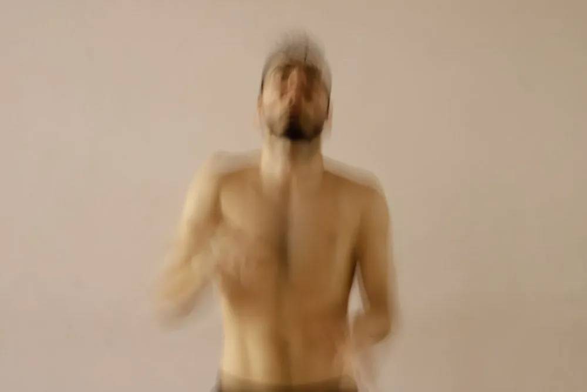
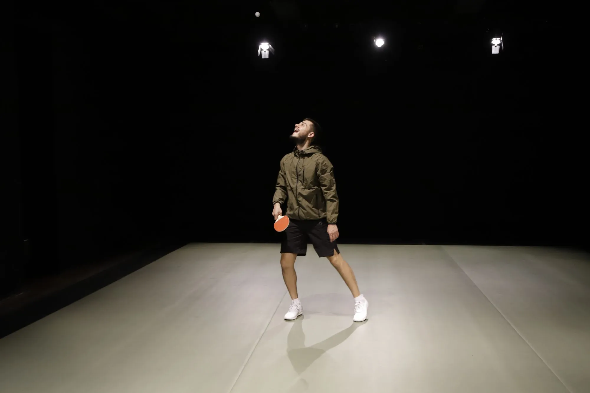
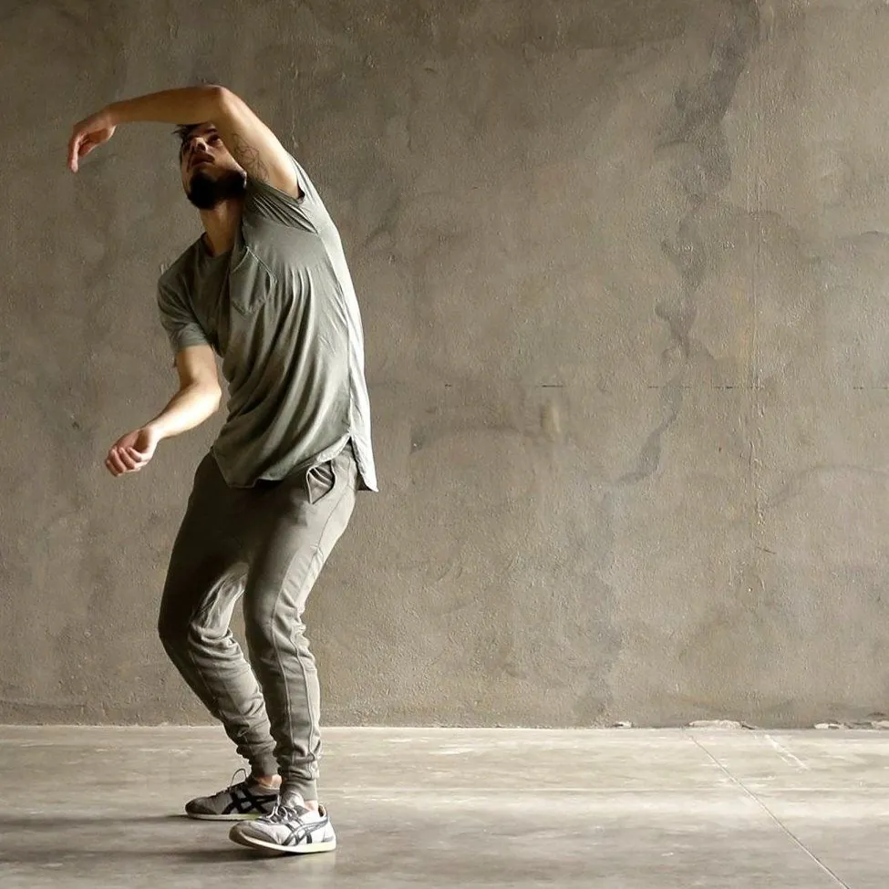
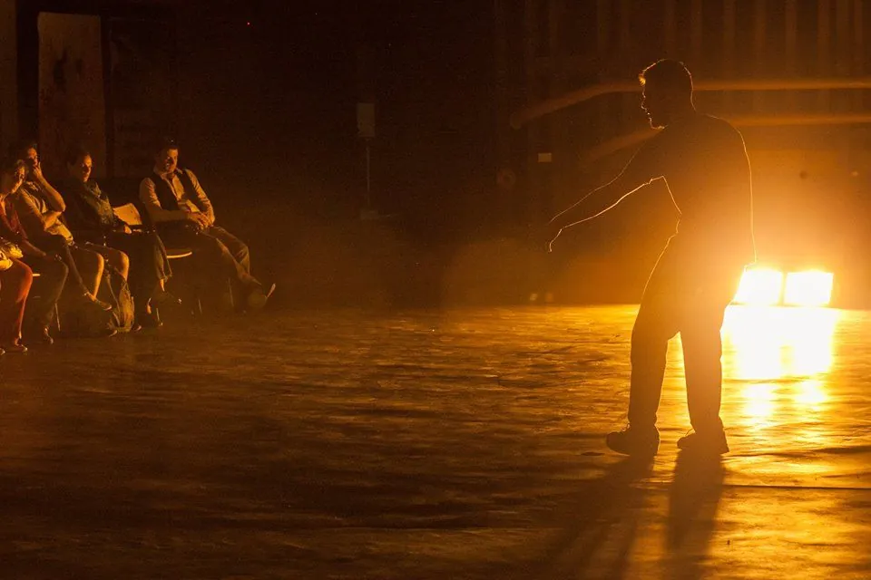

2024
Onde Houver Céu
Indicado ao Prêmio APCA


 Marcus Moreno
Marcus Moreno
2013 — 2024
2024
Indicado ao Prêmio APCA
2023
2021
2021
O título retoma um dos capítulos de A Flor da Lua.

Instante-já · 2019
Foto Silvia Machado

2019 / 2022
Indicado ao Prêmio APCA-Dança 2019: Estreia do ano e Prêmio Técnico (luz e espaço cênico de Hernandes de Oliveira)
Tudo o que acontece no cérebro se inicia a partir de células conhecidas como neurônios. De um neurônio para outro há, em muitos casos, pequenos vãos, preenchidos por substâncias químicas liberadas a cada disparo de um impulso elétrico. São eles que influenciam a produção de imagens provenientes dos sentidos humanos e do fluxo dos nossos pensamentos.
Estes foram alguns disparadores para a criação de instante-já, nome que tem inspiração na obra Água Viva da escritora Clarice Lispector, nas poéticas que refletem sobre a passagem do tempo e que, neste contexto, são contaminadas por ideias relativas à percepção, memória e produção de imagens, presentes no universo das ciências cognitivas. O curso deste desejo de dançar o instante-já se aprofundou a partir do encontro de Marcus Moreno com a artista uruguaia Andrea Arobba, por meio da imersão em materiais criativos levantados ao longo de uma residência artística realizada no Centro de Referência da Dança (CRDSP). Este é um trabalho que tem sua origem no encontro: com o tempo, com o espaço, com diferentes corpos, com maneiras distintas de fazer dança. Um solo construído por muitas presenças, em muitos instantes.
Obra criada em 2019 com apoio do Programa Municipal de Fomento à Dança para a Cidade de São Paulo, Secretaria Municipal de Cultura.
O ar é o não lugar onde tudo vai existir Clarice Lispector


2017
Este trabalho surge de temas corporais concretos para a criação de imagens sensoriais.
A partir de combinações do corpo e de suas singularidades, dança, música e luz se reúnem para a invenção de encontros possíveis.
Obra criada com apoio do Edital ProAC nº 04/2016, Concurso de Apoio a Projetos de Produção de Espetáculo Inédito e Temporada de Dança no Estado de São Paulo.
2016
Esta peça foi criada em capítulos breves. Tal como a flor da lua nasce e perdura por uma única noite, a dança se expande a caminho do encerro.
O ponto de partida para a criação deste trabalho é a passagem do tempo. Por meio da metáfora da flor da lua, e inspiração na obra da artista e ilustradora botânica Margaret Mee, a dança vai se constituindo a partir do instante presente.
Criado dentro do Programa de Residência Artística da Casa das Caldeiras (SP), o solo A Flor da Lua estreou em 2016 no Sesc Campinas, e circulou por festivais e mostras como Tiradentes em Cena (MG), Dança nas Bordas (SP) e Ciclo Solos al Mediodía (Montevidéu, UY). Em 2019, com apoio do Programa de Fomento à Dança, teve ampla difusão em diferentes espaços da cidade de São Paulo.



2013
O ponto de partida para esta criação é o da tela em branco, o espaço de acontecimento que está prestes a ser preenchido.
Estreia entre os destaques do ano na retrospectiva da crítica Helena Katz, O Estado de S. Paulo
Como um pintor que inicia sua obra com uma primeira marca de tinta sobre o quadro, a dança aqui vem do impulso interno vital, do movimento do corpo.
O desejo de promover reflexões sobre espaços vazios na construção de imagens teve início com a discussão sobre a qualidade das sensações proposta por Alberto Manguel, em seu livro Lendo Imagens, e se intensificou a partir do contato com as obras do pintor Jackson Pollock, conhecido por subverter o suporte e permitir a queda da tinta com a tela esticada no chão.
Estimulada pela ação de ‘pintar pintando’, percorrida pela forma, pela cor, pela abstração e sua capacidade de tornar-se movimento, a composição foi se constituindo com a urgência e o imediatismo de dançar. ‘Escorrer’, ‘respingar’, ‘(des)manchar’, ‘(des)controlar’ são alguns verbos de ação que serviram como mote para criar uma série de pequenas improvisações. A Imagem como Ausência propõe refletir sobre a presença do que não é necessariamente visto ou dito, num espaço em que o corpo se constitui pela sua própria ação e busca seu modo de fazer dança.
Obra criada em 2013 com apoio do Edital ProAC de Primeiras Obras de Criação em Temporada de Dança.